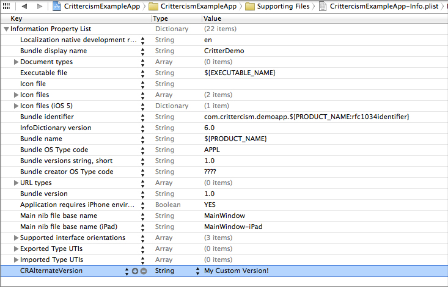

このトピックでは、Apple アプリでの Crittercism の使い方を説明します。
Note
初めてCrittercismをご利用になる場合は、まず Crittercism クイックスタート をご覧ください。 Crittercism SDK は、最初に無料の Crittercism アカウントにサインアップし、アプリを登録し (必要な場合)、アプリのプラットフォームの Crittercism SDK をダウンロードしなければインストールできません。 ダウンロードしたバージョンに関しては、 Release Notes を参照してください。
Crittercism Apple SDK のインストール方法は 2 種類あります。
プリコンパイル 。アプリのソース コードにアクセスできる場合は、次のステップに従って開発環境に Crittercism SDK をインストールできます。
ダウンロードした Apple SDK zip ファイルを解凍します。
Crittercism.frameworkフォルダーを XCode プロジェクト内にドラッグします。SystemConfiguration フレームワークとリンクします。
CocoaPods 。CocoaPods を使用する場合は、プロジェクトの Podfile に次の行を追加します。
pod 'CrittercismSDK'
追加したら、必ず pod install を実行し、.xcworkspace ファイルからプロジェクトを開いてください。
初期化 とは、Crittercism と通信するためにアプリを編集するプロセスです。
1.アプリケーション デリゲートのインプリメンテーション ファイルに Crittercism ヘッダーをインポートします。
#import "Crittercism.h"
2.AppDelegate の application:didFinishLaunchingWithOptions: メソッドで Crittercism を有効にします。
- (BOOL)application:(UIApplication *)application didFinishLaunchingWithOptions:(NSDictionary *)launchOptions {
[Crittercism enableWithAppID: @"アプリケーションID"];
// other code for your app
// ...
}
func application(application: UIApplication, didFinishLaunchingWithOptions launchOptions: NSDictionary?) -> Bool {
Crittercism.enableWithAppID("アプリケーションID")
//other code for your app...
return true
}
上記コードは、”[MyRegisteredAppName]” アプリ固有のものです。アプリの Crittercism アプリ ID は、 [App Settings (アプリ設定)] ページにあります。
Note
dSYM を Crittercism にアップロードしない限り、シンボル名やソース コード行参照はクラッシュ レポートに含まれません。詳細は、下記の「シンボリケーション」のセクションを参照してください。
3.Apple アプリを構築します。
これで Apple アプリが Crittercism と統合されました。他の機能を使用するには、プロジェクトにさらにコードを追加する必要があります。
デバッグ シンボルが削除されているアプリの場合、 シンボリケーション とはシンボルをマッピングしてスタック トレースを人間が読める形態に翻訳することを言います。 Crittercism では、自動的なサーバー側のシンボリケーションを提供しており、ユーザーがアプリのシンボル ファイルを提供する必要があります。
アプリのシンボル名やソース コード行番号とクラッシュ レポートとのマッピングを表示するには、次のいずれかを実施します。
当社の API を使用して、jenkins、hudson などや XCode 内のビルド スクリプト ( ビルド スクリプトを介したアップロード を参照) のいずれかを介して dSYM ファイルを自動的にアップロードする。
アプリの dSYM ファイルを圧縮し、 [App Settings (アプリ設定)] ページでアップロードする ( コマンド ラインを介した dSYM のアップロード を参照)。
アップロードされた dSYM ファイルを表示することもできます ( アプリに対してアップロードされた dSYM のリスト を参照)。
dSYM (またはシンボル) ファイルを自動的に Crittercism にアップロードするように Xcode を設定できます。
詳細については、この ナレッジベース文献 を参照してください。
次のコマンドを使用して Crittercism サーバーに dSYM をアップロードします。
構文
curl "https://app.crittercism.com/api_beta/dsym/<app_id>" -F dsym=@"<path/to/dsym.zip>" -F key=<key>
Note
このコマンドを使用するときは、「@」記号を指定します。
引数
名前 |
説明 |
|---|---|
|
アプリケーション ID。 |
|
dsym.zip ファイルへのパス。 |
|
キー。 |
戻り値
コード |
意味 |
|---|---|
|
成功しました。 |
|
指定した dsym.zip ファイルに問題があります。HTML 応答本文が問題を説明します。 |
|
アプリが見つからないか、トークンが正しくありません。 |
次のコマンドを使用して、特定アプリに対して既にアップロードされている dSYM のリストを取得します。
構文
curl "https://app.crittercism.com/api_beta/dsyms/<app_id>" -F key=<key>
引数
名前 |
説明 |
|---|---|
|
アプリケーション ID。 |
|
キー。 |
戻り値
そのアプリの dSYMs のリストを次の形式でリストします。
{"dsyms": [<uuid>, <uuid>, ...]}
logHandledException API を使用して、必ずしもクラッシュを生じるわけではないエラー条件を追跡します。
処理される例外を使用すると、 try/catch ブロック内に閉じ込められた例外を追跡したり、第三者製の SDK をテストしたり、現在アサーションを使用している可能性のあるコード内のエリアをモニタしたりすることができます。処理される例外は、メモリ低下警告などのエラー イベントの追跡にも使用できます。詳細については、 処理される例外 を参照してください。
処理される例外は、クラッシュ レポートとほぼ同じようにスタックトレースごとにグループ分けされます。 また、Crittercism ポータルの Handled Exceptions 処理される例外 エリアで表示できます。
以下は処理される例外のロギング例です。
@try {
[NSException raise:NSInvalidArgumentException
format:@"Foo must not be nil"];
// OR... call a method, or into a third party library that
// you know might raise an exception
} @catch (NSException *exception) {
// Pass it on to us!
[Crittercism logHandledException:exception]
}
let exception = NSException(name: "Exception Raised", reason: "foo must not be nil", userInfo: nil)
Crittercism.logHandledException(exception)
Note
例外の送信は毎分 5 件までに制限されています。
開発者は、個々のユーザーに関する情報を追跡するようにユーザーのメタデータを設定できます。 詳細については、 ユーザー メタデータ を参照してください。
ユーザー名を設定すると、各ユーザーのアプリ パフォーマンスがモニタできるようになります。 いったんユーザー名を設定すると、Crittercism ポータルの「Userviews (ユーザー検索)」機能Zを使用して特定のユーザーに発生したクラッシュやエラーのリストを検索できるようになります。 ユーザー名は、カスタマー サポート システムに関連付けられるような値に設定することを推奨します。
以下はユーザー名の設定例です。
[Crittercism setUsername:@"MrsCritter"];
Crittercism.setUsername("MrsCritter")
Note
1 から 32 文字までの文字列が有効な入力となります。
本セクションは、その他のオプションのタスクを説明します。
クラッシュ とは、ユーザーのセッションを終了させる予期しないイベントによって発生するランタイム例外のことを言います。
クラッシュは try/catch ブロック内では処理されません。詳細については、 クラッシュ レポート (未処理例外) を参照してください。
@try/@catch ブロック外でランタイム例外が作成された場合は、クラッシュ レポートが生成され、優れた診断と共に Crittercism に送信されます。
ではやってみましょう！例外を発生させるボタンを作成します。
- (IBAction)crashPressed:(id) sender {
[NSException raise:NSInvalidArgumentException
format:@"Foo must not be nil"];
}
@IBAction func crashPressed(sender: AnyObject) {
NSException(name: "Exception Raised!", reason: "Foo must not be nil", userInfo: nil).raise()
}
クラッシュ レポートは、次にアプリがロードされるときに送信されます。アプリを再起動したら、クラッシュ概要ページに移動してクラッシュを表示します。またはクラッシュやアプリのロードが発生すると同時に、ライブ統計ページにリアルタイムでクラッシュやアプリのロードを表示することもできます。
Note
シミュレーターでテストしている場合には、Crittercism がクラッシュをキャプチャできなくなりますので XCode デバッガを外してください。
ユーザーのデバイスにインターネット接続がない場合は、デバイス上で発生したクラッシュが Crittercism に送信できるようになるまでクラッシュをキャッシュします。デフォルトでは、デバイス上に 3 件までのクラッシュをキャッシュしますが、この値は setMaxOfflineCrashReports メソッドを使用して変更できます。
[Crittercism setMaxOfflineCrashReports:(NSUInteger)max;];
Crittercism.setMaxOfflineCrashReports(10)
最大値以上の数のクラッシュが発生した場合は、一番古いクラッシュが上書きされます。この設定の値を少なくしても、オフライン クラッシュ レポートは削除されません。送信されていないクラッシュ レポートは、Crittercism に正常に送信されるまで保持されます。従って、短期間はデバイス上に最大数以上が保存されていることがあります。最大 10 件までのオフライン クラッシュ レポートを指定できます。
前回の実行でアプリがクラッシュしたことを検出するには、初期化時に Crittercism にデリゲート オブジェクト (CrittercismDelegate プロトコルに従う) を渡すことができます。
@interface MyAwesomeViewController : UIViewController <CrittercismDelegate>
//...
#pragma mark CrittercismDelegate Method
- (void)crittercismDidCrashOnLastLoad {
NSLog(@"App crashed the last time it was loaded");
}
//...
@end
[Crittercism enableWithAppID:@"MYAPPID"
andDelegate:myViewController];
class appViewController: UIViewController, CrittercismDelegate {
//MARK: CrittercismDelegate Method
override func crittercismDidCrashOnLastLoad {
print("App crashed the last time it was loaded")
}
// ....
}
Crittercism.enableWithAppID("MYAPPID", andDelegate: appViewController.self)
アプリがネットワーク呼び出しを行うと、Crittercism は必ず特定の情報を自動的にモニタし、キャプチャします。 フィルタリングや位置詳細はオプションで設定できます。詳細については、 サービス モニタリング を参照してください。
Crittercism を有効にすると、 NSURLConnection によって生成される HTTP トラフィックのパフォーマンスがモニタされます。
NSURLConnection API を使って明確に発行された HTTP リクエストは、デリゲート オブジェクトでサポートします。現在は、以下に対する呼び出しのインストルメント化は行っていません。
+[NSURLConnection sendAsynchronousRequest:queue:completionHandler]
または
+[NSURLConnection sendSynchronousRequest:returningResponse:error:]
詳細については、 Apple ドキュメンテーション を参照してください。
要求の実際の内容が検閲されることはもちろん絶対にありませんが、Crittercism ウェブ ポータルに表示したくない URL があることもあります。
Crittercism を有効にすると、フィルタ パラメーターを使って慎重に扱うべき URL がネットワーク機器によってキャプチャされないようにすることができます。これを使用するには、 CRFilter オブジェクトの NSArray を渡してライブラリがキャプチャした URL と照合します。
Note
フィルタリングはアプリケーションのメイン スレッドとは離れたところで実行されます。
フィルタを何も指定しなければ、Crittercism のデフォルトの動作ではすべての URL からクエリ文字列が消去されます。たとえば、次のような URL の場合、
https://api.compuglobalhypermeganet.com/store/purchase.asp?uname=homerjs
Crittercism のサーバーにレポートされる URL は次のようになります。
https://api.compuglobalhypermeganet.com/store/purchase.asp
使用できるフィルタリング モードは 2 種類あります。
ブラックリスト - 一致する URL を完全に廃棄します。Crittercism にはレポートされません。
「クエリ維持」フィルタリング - クエリ パラメーターを消去するというデフォルトの動作を阻止します。代わりに、一致する URL はクエリ文字列を維持します。
フィルタは、Crittercism 有効化時に供給できます。
[Crittercism enableWithAppID:@"MYAPPID"
andURLFilters:@[[CRFilter filterWithString:@"sensitiveURL"],
[CRFilter queryPreservingFilterWithString:@"lookupMovie"]]];
Crittercism.enableWithAppID("MYAPPID",
andURLFilters: [CRFilter(string: "sensitiveURL"), CRFilter.queryPreservingFilterWithString("lookupMovie")])
addFilter: メソッドを使用すると、その場で他のフィルタを追加することができます。
[Crittercism addFilter:(CRFilter*)filter];
Crittercism.addFilter(filter: CRFilter?)
Note
ネットワーク パフォーマンスのモニタリングは、iOS 5.0 以降で実行する場合にのみ有効になります。
Crittercism サービス モニタリングは、 位置情報をネットワーク データに関連付けます。 デフォルトでは、位置情報は IP の逆引きで取得されます。
ライブラリ バージョン 4.1.1 からは、さらに正確な緯度と経度情報をサーバーに送信するオプションがあります。次の例のように、デバイスの直近の位置を updateLocation: API 呼び出しを使って Crittercism に通知することができます。
// Update location information
[Crittercism updateLocation:(CLLocation*)location];
Crittercism.updateLocation(location: CLLocation?)
Crittercism では、Crittercismへのあらゆるアプリのレポートを無効にするスタティック型のオプトアウト ステータス設定があります。
開発者は、ユーザーに Crittercism のロギングとレポートからオプトアウトするかどうかを尋ねるコードを実装し、その後ステータスを変更する setOptOutStatus を呼び出すことができます。また、 requestOptOutStatus を呼び出して現在のステータス設定を判断することもできます。詳細については、 Crittercism からのオプトアウト を参照してください。
以下の API 呼び出しを使うと、ユーザーは Crittercism レポートからオプトアウトすることができます。
// Opt the user out
[Crittercism setOptOutStatus:YES];
Crittercism.setOptOutStatus(true)
OptOutStatus を [YES (はい)] に設定すると、ユーザーのアプリからは一切情報やリクエストが送信されなくなります。通常、開発者はこの API 呼び出しを設定メニューのチェックボックスに接続します。
Crittercism では、すべてのアプリのパフォーマンス データをアプリ バージョンで自動的にグループ分けします。これにより、新しいアプリ バージョンがリリースされるたびにパフォーマンスの向上や回帰をモニタできます。デフォルトでは、Apple SDK はアプリのInfo.plist ファイルにある「バンドル バージョン」をレポートします。たいていの場合にはこれで十分ですが、Crittercism にレポートされるアプリ バージョンをカスタマイズすることが望ましいこともあります。
カスタム バージョンは、付加的なプロパティである CRAlternateVersion のタイプ String をアプリの Info.plist ファイルに追加すると指定できます。
{kind=link}
{kind=link}